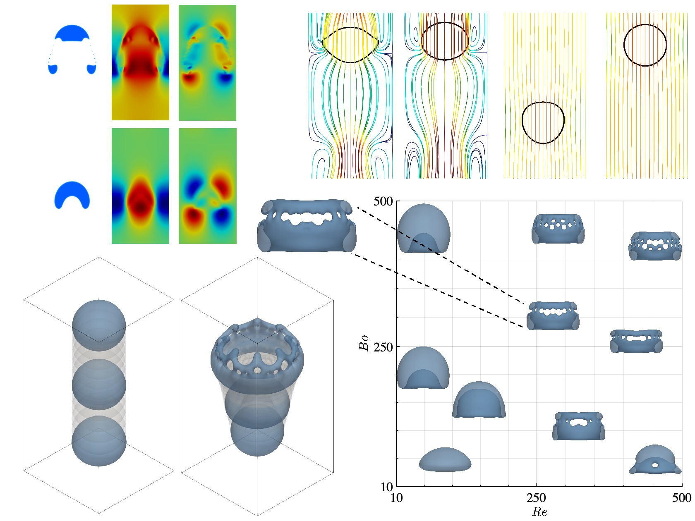
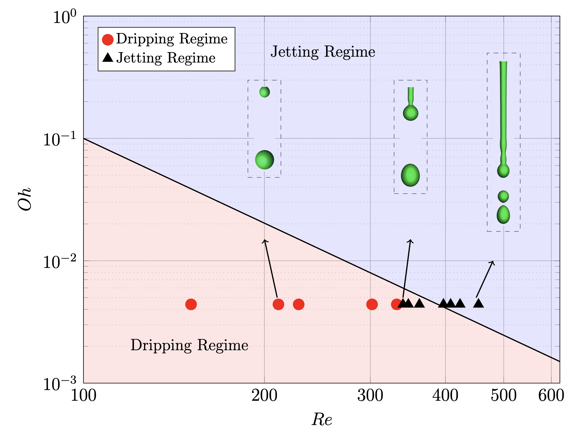
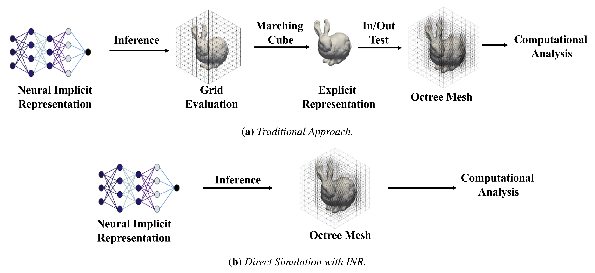

Multiphase flows
Drops, bubbles, jets, and the fascinating physics of evolving interfaces.
I’m Mehdi Shadkhah, a Ph.D. student and research assistant in Mechanical Engineering with a co-major in Applied Mathematics at Iowa State University, where I work with Prof. Baskar Ganapathysubramanian and Prof. James Rossmanith.
My research focuses on developing computational algorithms and mathematical models for fluid dynamics and multiphysics simulation. I combine numerical methods, high-performance computing, and scientific machine learning to study multiphase flows and simulate physics in complex geometries.
I develop numerical algorithms for coupled fluid, interfacial, and electrochemical systems. My work involves the Navier–Stokes, Poisson–Nernst–Planck, Allen–Cahn, and Cahn–Hilliard equations, with an emphasis on modeling the interactions between fluid motion, ion transport, and evolving interfaces. I also work on scientific machine learning for fluid mechanics, including contributions to FlowBench and MPFBench. These datasets support the development and evaluation of neural models for predicting flows around complex geometries and the dynamics of droplets and bubbles.
I earned an M.Eng. in Mechanical Engineering from Iowa State University and an M.Sc. in Aerospace Engineering from Sharif University of Technology. My master’s research at SUT investigated the primary atomization of liquid jets using the lattice Boltzmann method and GPU computing.
Drops, bubbles, jets, and the fascinating physics of evolving interfaces.
Reliable discretizations for complex geometries and challenging flow problems.
Turning numerical ideas into practical tools for GPU-accelerated simulation.
Connecting physical simulation with benchmarks and scientific machine learning.
My research experience and the skills behind my work.
Developing computational algorithms and mathematical models for multiphysics simulation.
Developed computational algorithms and mathematical models for fluid simulation.
Designed and analyzed agricultural irrigation equipment.
Co-major in Applied Mathematics.
GPA: 4.0/4.0
GPA: 4.0/4.0
GPA: 3.8/4.0
Thesis: “Computational Investigation of Primary Atomization of an Unsteady and 3D Laminar Liquid Jet, Using LBM and GPU”
Building datasets and benchmarks that connect fluid simulation with scientific machine learning.
Learning fluid flow around complex shapes.
A benchmark for evaluating neural PDE solvers across diverse geometries and flow conditions. FlowBench brings together high-fidelity simulations of steady and transient flows, including forced and free convection, to study how learned models generalize to unfamiliar shapes and physics.
Learning the dynamics of droplets and bubbles.
A dataset for scientific machine learning built from 11,000 simulations of rising bubbles and falling droplets in 2D and 3D. Generated with a CUDA-accelerated lattice Boltzmann framework, it captures deformation and breakup across varying fluid properties and supports the evaluation of neural operators and foundation models.

From dripping to jetting: simulating liquid breakup.
A CUDA-accelerated phase-field lattice Boltzmann framework for immiscible two-phase flows in 2D and 3D. Validated against interfacial-flow benchmarks, CLIP captures liquid jet breakup and the transition between dripping and jetting, connecting GPU-based simulation with experimental observations of breakup length and droplet formation.

Removing hanging nodes. Preserving accuracy.
This work studies how hanging-node removal affects convergence and solver performance on adaptive octree meshes. An element-by-element strategy eliminates or merges hanging nodes while preserving continuity, without requiring global 2:1 balancing. Integrated with the Shifted Boundary Method, the approach is evaluated on Poisson’s equation and linear elasticity for irregular domains.

From implicit shapes to fluid simulation.
This framework couples implicit neural representations of complex geometry with the Shifted Boundary Method. Neural network inference supplies surrogate boundaries and distance vectors directly on the computational grid, avoiding intermediate surface-mesh generation. Demonstrations span 2D and 3D flow benchmarks, gyroids, the Stanford bunny, and AI-generated shapes, with accuracy comparable to conventional mesh-based approaches.

My papers on computational fluid dynamics, numerical methods, and scientific machine learning.
Theoretical and Computational Fluid Dynamics · Volume 40, Article 7
Read paper ↗Journal of Data-centric Machine Learning Research
Read paper ↗Journal of Data-centric Machine Learning Research
Read paper ↗Computer Methods in Applied Mechanics and Engineering · Volume 446, Article 118248
Read paper ↗Advances in Computational Science and Engineering · Volume 4, pp. 119–141
Read paper ↗Scientific ideas deserve useful implementations.
A CUDA-accelerated lattice Boltzmann framework for exploring bubbles, droplets, and liquid jets in two and three dimensions. Its modular C++/CUDA architecture supports extending simulations with additional physical models.
Navier–Stokes flow coupled with an Allen–Cahn phase field, using weighted MRT collision and D2Q9 / D3Q19 lattices.
Configure geometry, boundary conditions, and physical parameters through input files. Explore jet breakup, Rayleigh–Taylor instability, and bubble or drop dynamics.
Choose single or double precision, resume runs from checkpoints, and export VTK results for visualization.
A place for experiments, small discoveries, and the process behind the results.
Surface tension, time scales, and the unexpected richness of a seemingly simple flow.
Thoughts on validation, performance, and building scientific software that others can use.
Interested in CFD, numerical methods, or scientific software? Send me an email or explore my work and public profiles below.